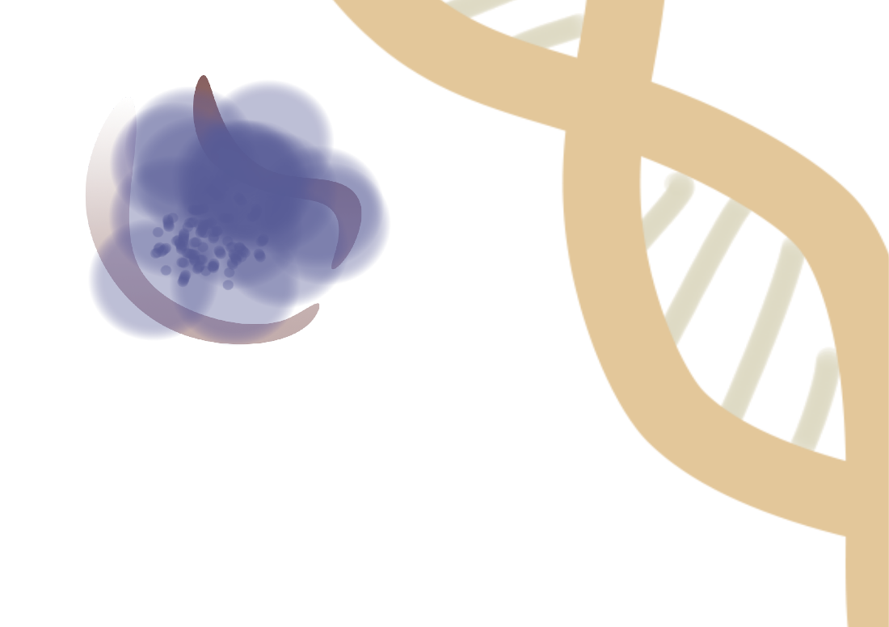

- Czym jesteśmy? Z czego jesteśmy stworzeni? Jak to jest możliwe, że spośród ośmiu miliardów osób żyjących na ziemi, każ da z nich ma swoją niepowtarzalną osobowość? Nigdy nic się nie powtarza?... A może?